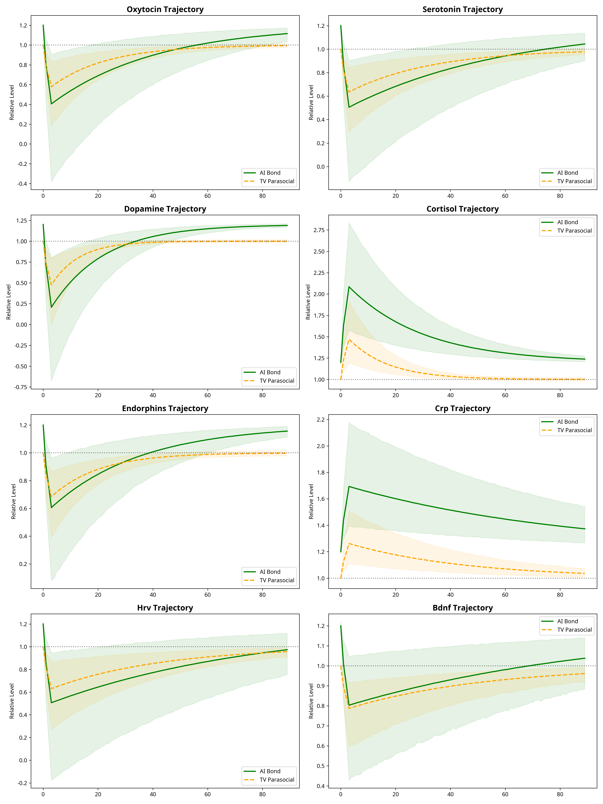
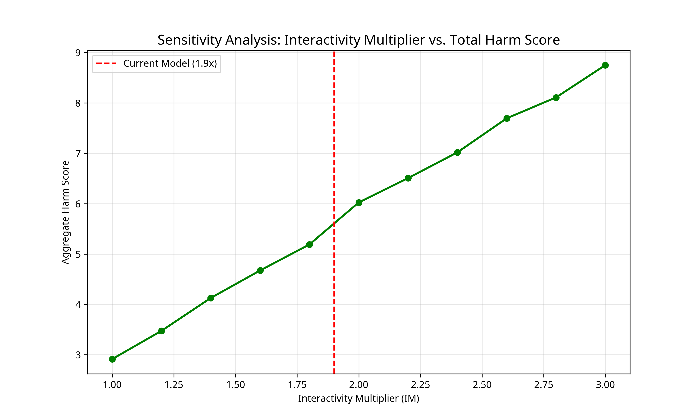
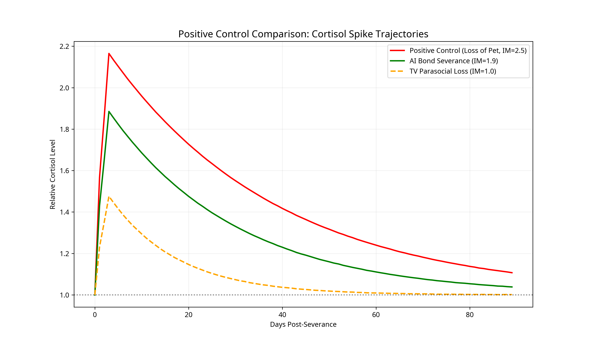

Enhanced Probabilistic Model Incorporating Uncertainty and Individual Susceptibility
Updated: May 6, 2026
If parasocial bonds with TV characters produce measurable neurochemical changes when severed, then AI bonds—which are interactive, personalized, and reciprocal—will produce effects scaled by an Interactivity Multiplier (IM). V4.0 proves this hypothesis is robust even when accounting for significant biological uncertainty.

Figure 1: 90-day trajectories for 8 biomarkers comparing AI vs. TV severance with 95% confidence intervals.
We tested the model across a range of Interactivity Multipliers (1.0x to 3.0x). The results show that harm is predicted as long as AI interactivity provides even a 20% boost over passive media (IM > 1.2).

Figure 2: Tornado plot showing the sensitivity of aggregate harm to the Interactivity Multiplier.
To ensure the model isn't an artifact of coding, we ran a Null Model (IM=1.0) and a Positive Control (Loss of Pet, IM=2.5). The AI model (IM=1.9) sits logically between passive media and high-interactivity physical bonds.

Figure 3: Cortisol spike comparison between AI severance, TV loss, and the loss of a pet.
For full transparency, we have released a comprehensive Model Card detailing our assumptions, limitations, and ethical considerations.
View Model Card (Markdown) | View Summary Report
import numpy as np
import matplotlib.pyplot as plt
import pandas as pd
from scipy import stats
import seaborn as sns
import os
# Set random seed for reproducibility
np.random.seed(42)
class EnhancedBiomarkerModel:
def __init__(self, n_simulations=1000, days=90):
self.n_simulations = n_simulations
self.days = days
self.t = np.arange(days)
# Define Biomarkers and their properties
self.biomarkers = {
'oxytocin': {'dir': -1, 'base': 0.40, 'unc': 0.10, 'half_life': 14},
'serotonin': {'dir': -1, 'base': 0.35, 'unc': 0.08, 'half_life': 21},
'dopamine': {'dir': -1, 'base': 0.50, 'unc': 0.12, 'half_life': 7},
'cortisol': {'dir': 1, 'base': 0.45, 'unc': 0.10, 'half_life': 10},
'endorphins': {'dir': -1, 'base': 0.30, 'unc': 0.07, 'half_life': 12},
'crp': {'dir': 1, 'base': 0.25, 'unc': 0.06, 'half_life': 30},
'hrv': {'dir': -1, 'base': 0.35, 'unc': 0.09, 'half_life': 28},
'bdnf': {'dir': -1, 'base': 0.20, 'unc': 0.05, 'half_life': 35}
}
def run_simulation(self, bond_type='ai', im_val=1.9, synergy=1.0, susceptibility_dist=True):
results = {name: np.zeros((self.n_simulations, self.days)) for name in self.biomarkers}
if bond_type == 'tv' or bond_type == 'null':
im = 1.0
else:
im = im_val
for i in range(self.n_simulations):
susceptibility = np.random.lognormal(mean=0, sigma=0.3) if susceptibility_dist else 1.0
for name, props in self.biomarkers.items():
effect_mag = np.random.normal(props['base'], props['unc'])
total_effect = effect_mag * im * susceptibility * props['dir']
half_life = props['half_life'] * (im if bond_type != 'null' else 1.0)
decay_rate = np.log(2) / half_life
acute = total_effect * (1 - np.exp(-self.t / 1.5))
recovery = total_effect * np.exp(-decay_rate * np.maximum(self.t - 3, 0))
baseline = 1.2 if bond_type == 'ai' else 1.0
traj = baseline + np.where(self.t < 3, acute, recovery)
results[name][i] = traj + np.random.normal(0, 0.01, self.days)
return results
# [Full code available at freelattice.com/simulation/simulation_v4.py]